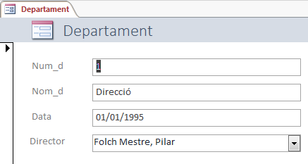
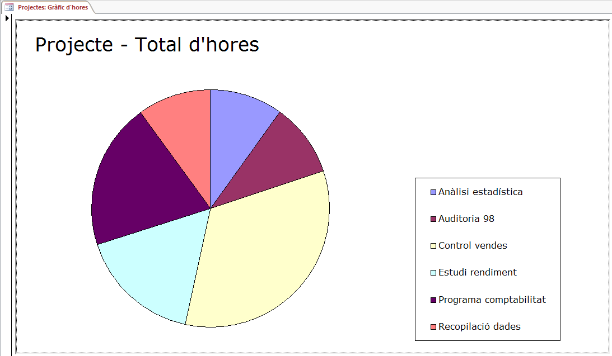
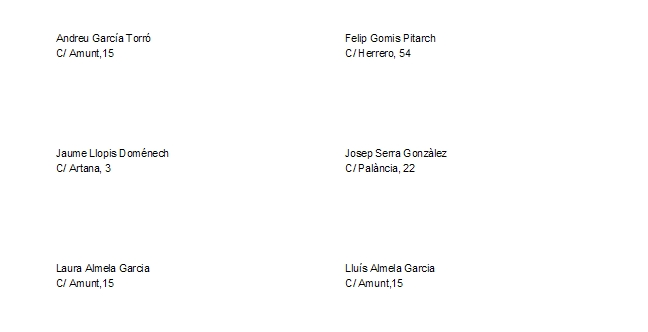

1.3 Formularis i Informes
1.16) Crear un formulari, utilitzant l'assistent, per a la taula Departament, posant tots els camps i totes les opcions per defecte. Us posarà com a nom del formulari també Departament.
1.17) Crear un formulari, utilitzant l'assistent, per a la taula Projecte, posant tots els camps i totes les opcions per defecte. Us posarà com a nom del formulari també Projecte.
1.18) En el formulari Departament, llevar el quadre de text corresponent al Director, i inserir un quadre combinat (utilitzant l'assistent: "vareta màgica") per al camp director, de manera que es puga triar entre tots els empleats de l'empresa. Per a poder llegir millor és convenient que s'oculte la clau principal, encara que se seleccione de la taula Empleat tant el Dni com el Nom. Aquest podria ser l'aspecte:

1.19) Aconseguir el mateix amb el camp departament del formulari Projecte, però ara, en compte d'esborrar el quadre de text, convertir-lo directament a quadre combinat i modificar les propietats per a que funcione com l'altre.
1.20) Construir un formulari amb aquest aspecte guardeu-lo com Empleat-Familiar:
1.21) Crear un formulari amb un gràfic circular basat en la consulta 1.12: Projecte - Total d'hores. Utilitzeu, en el moment de crear-lo, gráfico dinámico. Poseu els camps oportuns en el mateixos llocs que en la següent imatge. Recordeu que el tipus ha de ser un gràfic circular. Anomeneu-lo Projectes: Gràfic d'hores.

El següent vídeo explica com fer-lo:
1.22) Crear un informe que diga el nombre de familiars de cada empleat de cada departament. Haurà de tenir el següent aspecte. Guardeu-lo amb el nom Informe:
1.23) Crear un informe d'etiquetes on ha de constar el nom i l'adreça de tots els familiars (l'adreça d'un familiar l'obtenim per l'empleat). Donar-li el nom Etiquetes Familiars

Nota
Segurament us farà falta una consulta prèvia, però que és prou senzilla.
Per a veure el resultat correctament haureu d'anar a Vista Preliminar
Llicenciat sota la Llicència Creative Commons Reconeixement NoComercial SenseObraDerivada 2.5